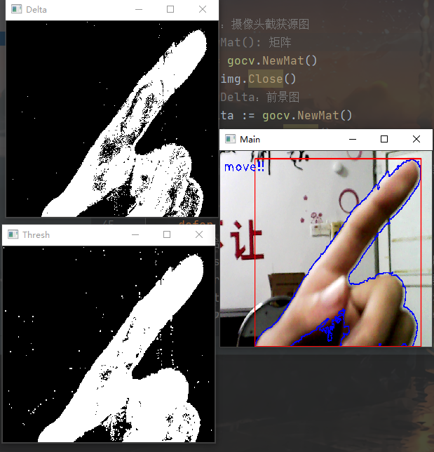
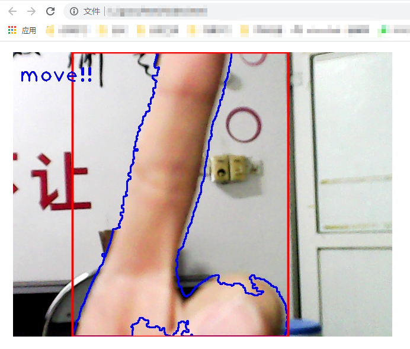

Gocv的安装
其实官方文档讲的很清楚了，但是在安装过程还是有很多坑。写着凑字数。
1.安装gocv
1 | go get -u -d gocv.io/xgocv |
2.安装MingGW-W64和CMake
1.下载MingGW (要带posix、seh参数的，而且版本大于7.0)。
2.解压到任意位置。
3.将mingw64\bin加到环境变量。
1.下载CMake
2.防呆安装，照着点就行了。
3.编译Opencv
这里的安装方法与官方给出的有些区别，官方的装不好。
1.下载opencv编译相关文件（下面两个）。
2.在C:\下新建目录opencv,在opencv下新建目录build。
3.解压刚刚下的两个压缩包到C:\opencv。
4.把Python相关的环境变量改掉（比如在后面加个1）。
(如果Python安装过Opencv这里就装不上)
5.开始编译
1 | cd C:\opencv\build |
如果没报错，编译完后把C:\opencv\build\install\x64\mingw\bin丢进环境变量。
如果上面报错
1 | fatal error: boostdesc_bgm.i: No such file or directoryc |
下载缺失文件丢进C:\opencv\opencv_contrib\modules\xfeatures2d\src
链接：https://pan.baidu.com/s/1_nipZrmFPGkYma1NpgCq4A
提取码：t2r5
然后重复操作5。
6.测试
1 | cd %GOPATH%\src\gocv.io\x\gocv |
若安装成功会返回
1 | gocv version: 0.25.0 |
7.把Python环境变量调回去(其实可以不要，我不学Python啦)
Gocv实战
下面将以背景差分法实现运动目标检测为例展示Gocv的基本用法。
一、连接摄像头，并创建窗口
1 | // 设备号（0为默认摄像头） |
二、新建图形矩阵
1 | // gocv.NewMat(): 新建矩阵。 |
三、构建混合高斯背景建模的背景减除法
1 | // gocv.NewBackgroundSubtractorMOG2WithParams(history, varThreshold, detectShadows) |
四、构建循环捕捉、处理并展示
1 | for { |
五、完整的代码实现（额外加了一点点东西：提示词和其他预览窗口）
1 | package main |

六、写一个WebSocket把图片投上去就可以直播了！！（bushi）

所以为啥不用python呢…